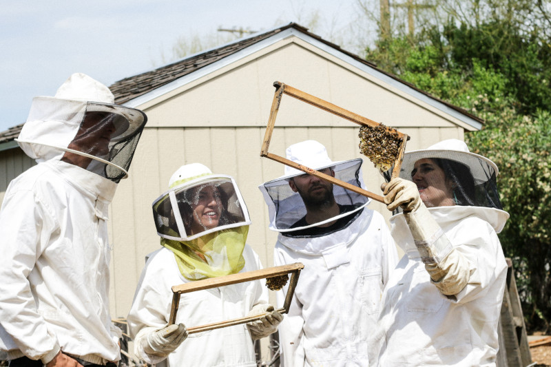

Välkommen hit

Vad kul att du har hittat hit. Denna sida är en samlingsplats för oss biodlare på
Visingsö.
Är du inte biodlare utan kanske bara nyfiken så är du såklart välkommen du med.
Vi håller till i Stigby på Persgården i vår bistuga.
Idag är vi 14 biodlare på Visingsö och vi har tillsammans ca 90 kupor.
Skulle du vara intresserad av att gå en kurs i biodling så kan du fylla i formuläret på sidan
"Kontakt" så hör vi av oss.
Ligustica biet

Alla bin på Visingsö är av rasen Apis Mellifera Ligustica eller Ligustica biet.
De kallas även för de gula, italienska honungsbiet.
Här på Visingsö verkar vi för att
bibehålla Ligustica rasens egenskaper.
Varje år i juni görs en kalibrering av alla kupor på ön där vi kontrollerar svärmtröghet,
temperament, städförmåga, kvalster mm.
Parningsstationen

Här på Visingsö har vi en parningstation där man kan komma ut med sin Ligustica drottning för parning.
Ligusticabiodlarna har två parningsstationer i Sverige. En här och en på Hallands väderö.
Är du intresserad av att para en drottning här så kan du ringa eller maila Lars eller fyll i
formuläret på Kontakt-sidan.